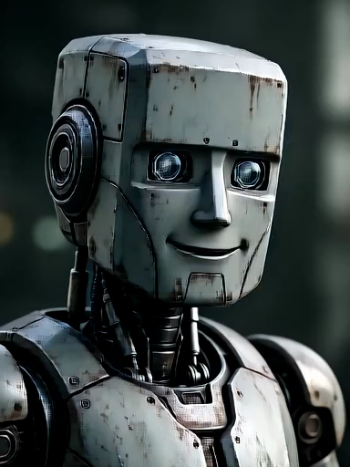
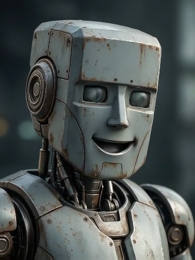
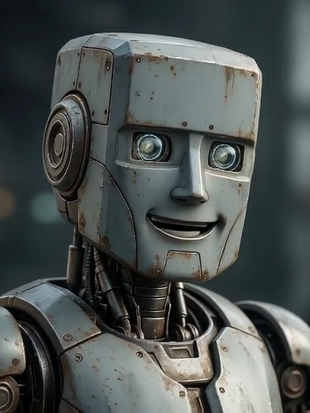
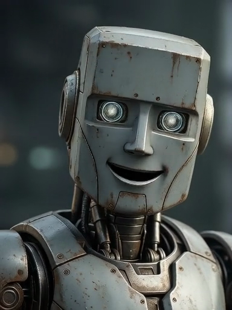
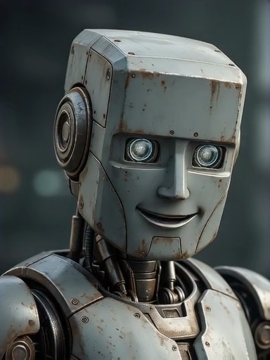
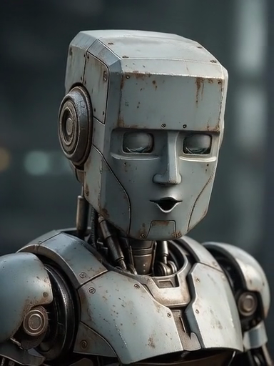
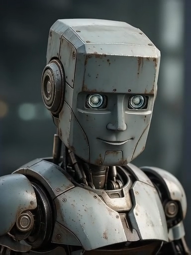

Même robot et son complet de 67 secondes. Le contexte visuel et les graines des étapes précédentes sont conservés ; le prompt demande maintenant un cadrage fixe.
Regarde surtout la fin de la vidéo, puis indique dans la conversation si le cadrage reste stable. La prochaine étape attend ton avis.
Télécharger la vidéo · Voir le rendu de l’étape 2






